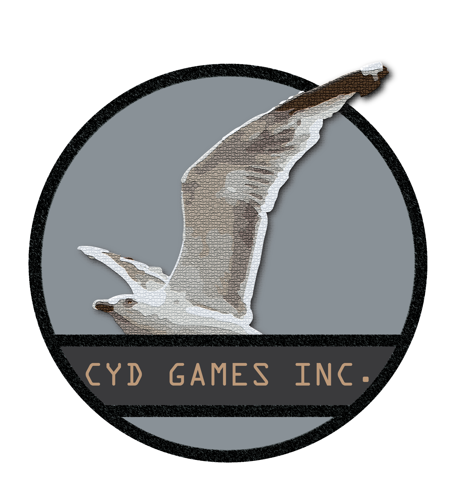

Our website is commited to discovering and previewing games from around the world. Here at Cyd Games
Inc. (Cydinc.ga),
our games will be made readily available for our users to download and use. The products here will
vary as we will priotise
our user's interest. It will range from utility applications for your android device to PC games for
your entertainment.
Furthermore, Cyd Games Inc. is committed to providing reviews of games which are recommended and
praised during and after
its development. This is to provide the users with an understanding of such games and provide them
with our review scores.
The purpose of this website is to archive content created for project purposes. Cyd Games Inc. is a
fictional e-commerce
entity with the sole purpose of fulfilling project requirements. We are, in no way, obtaining any
form of profits in any
part of this website. The content made available here are solely for ease of access for others to
obtain the applications
of certain projects that have been completed. Additionally, the website is tracked via Google
Analytics to fulfil project
needs of investigating user behaviours.
This website serves to complete and contain projects related to 'Website and E-Commerce Management'
(6612YCOM),
'Mixed Reality Technologies' (6606YCOM), and the Final Year Project (6600YPROJ).
I, Hoh Wye Kin, would like to thank my supervisors, formerly Ms Mai and currently Ms Jaya, for
guiding and providing
feedback on various aspects of my final year project, "Of Lurkers and Curses". Additionally, I would
like to thank my
family, especially my mother, for supporting me throughout my whole college life. Without them, I
would never have succeeded.
I would also like to thank my intakemates for having to need to deal with my existence. Lastly, I
want to give a special
thanks to my friends outside of my college life. To Harraz and Heng, I will always feel like there
is a goal to reach while
within your presence and I will take my envy to push me forward. To Hau Jyet, whom I've always
believed to be my closest companion,
Thank you.